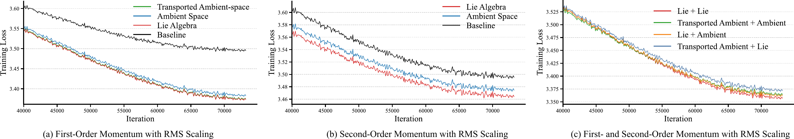
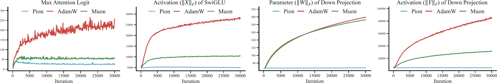
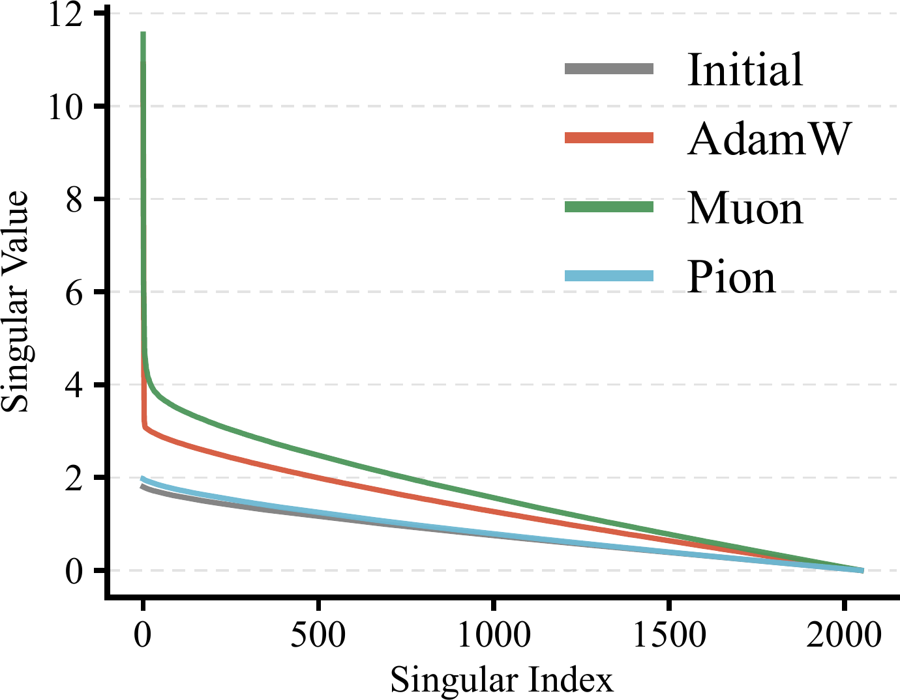
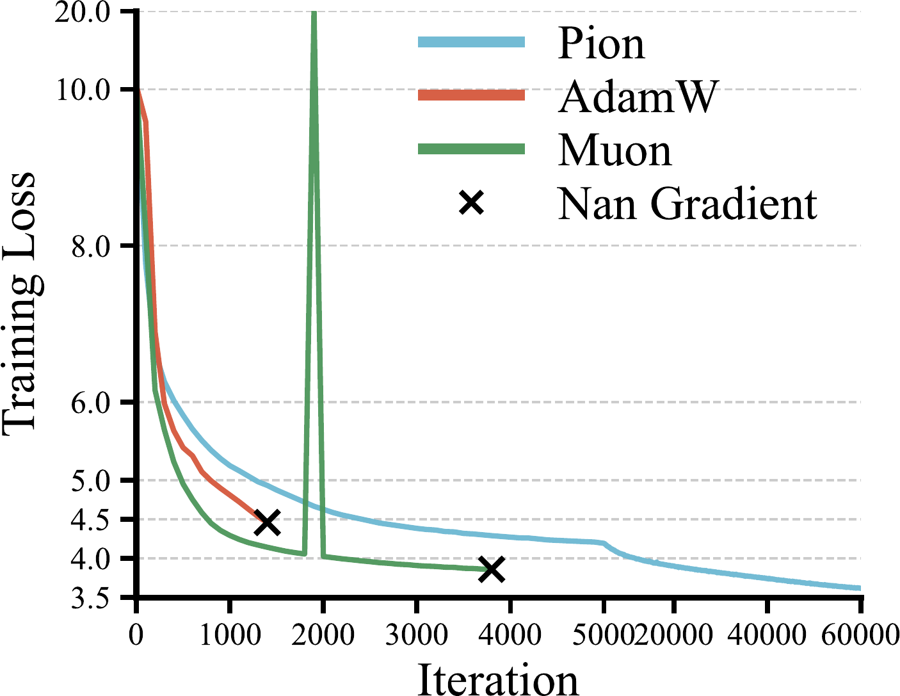
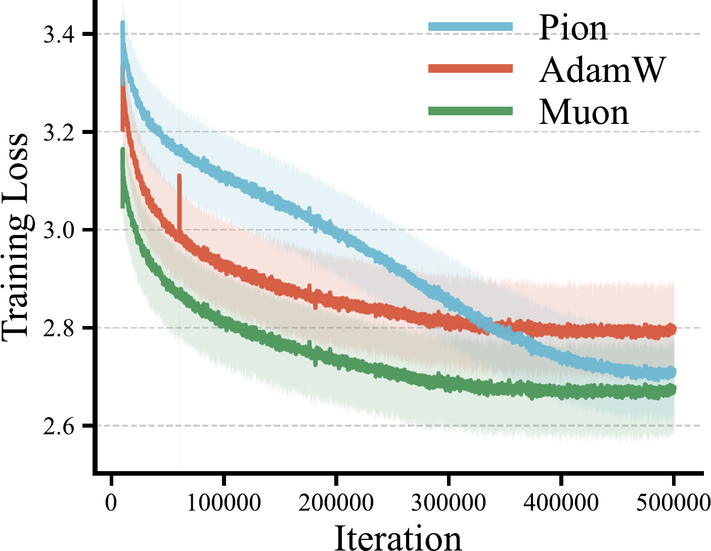
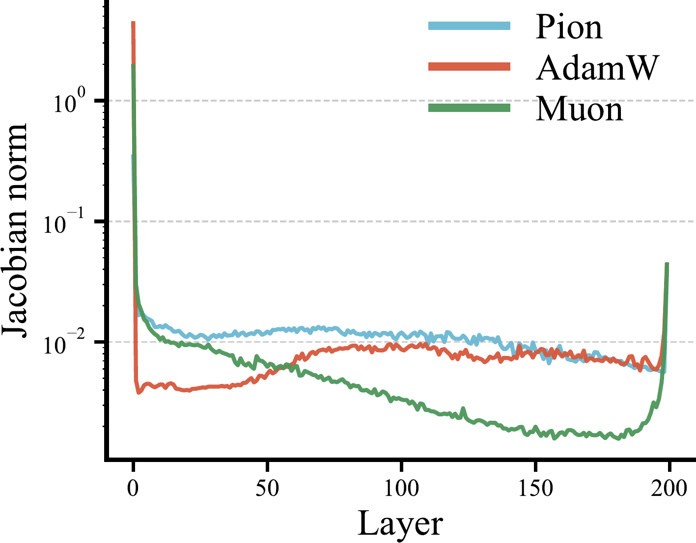
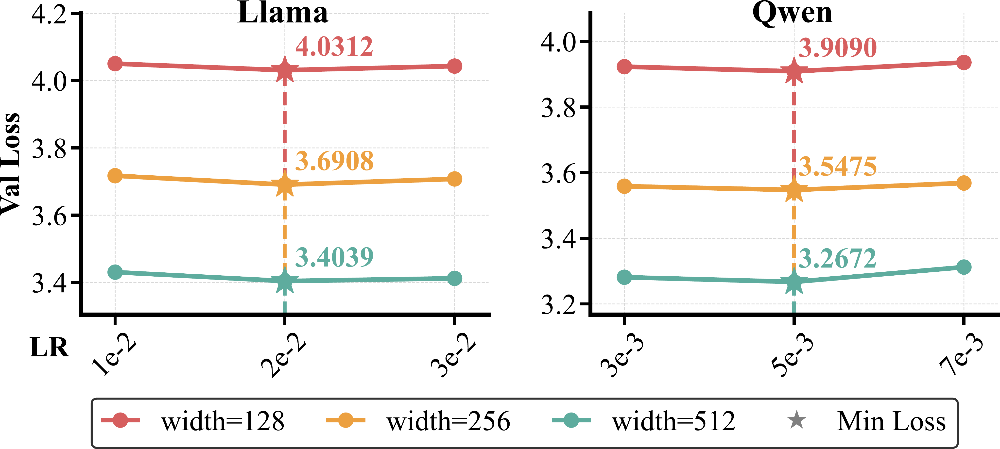
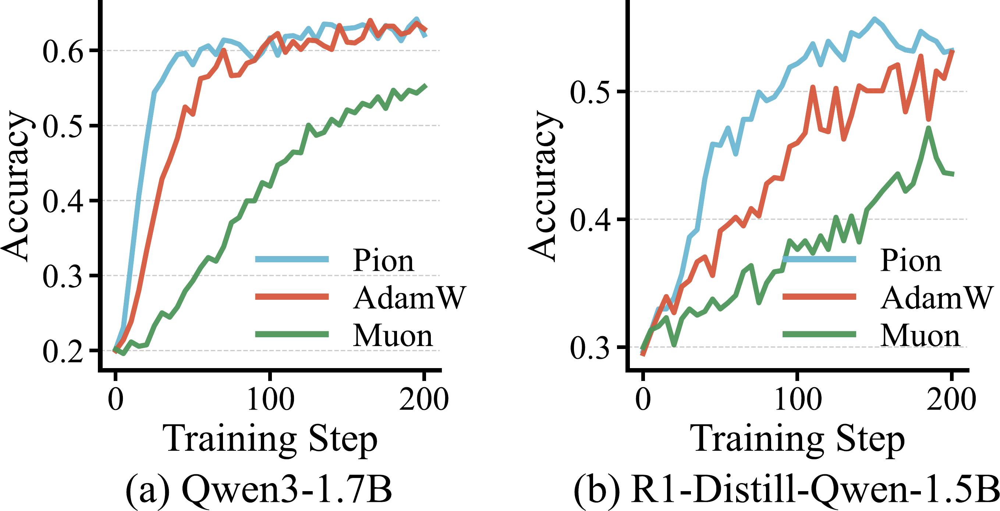

An LLM optimizer that updates each weight matrix through coupled left and right orthogonal transformations — preserving its singular spectrum throughout training.
We introduce Pion, a spectrum-preserving optimizer for large language model training based on orthogonal equivalence transformations. Unlike additive optimizers such as AdamW and Muon, Pion updates each weight matrix through left and right orthogonal transformations, preserving its singular values throughout training. This yields an optimization mechanism that modulates the geometry of weight matrices while keeping their spectral norm fixed. We derive Pion's update rule, systematically examine its design choices, and analyze its convergence behavior along with several key properties. Empirical results show that Pion offers a stable and competitive alternative to standard optimizers for both LLM pretraining and finetuning.
The update rule lives on the iso-spectral manifold of W0. Singular values are preserved exactly — no explicit normalization or projection needed.
Orthogonal equivalence transformations preserve the minimum-energy configuration of zero-mean Gaussian initialization, keeping neurons uniformly distributed on the hypersphere throughout training.
Pion satisfies the forward spectral condition by construction. A simple bilateral normalization on the spectral norms of Gin and Gout delivers learning-rate transfer across model widths.
Trains successfully on 200-layer networks and on models with no normalization layers — both regimes where AdamW and Muon diverge.
We prove an 𝒪(1/√T ) stationarity bound on the iso-spectral manifold under standard L-smoothness and bounded-noise assumptions.
Best average benchmark score on LLaMA-1.3B pretraining, best stability-plasticity tradeoff on SFT, and the strongest RLVR results on Qwen3-1.7B and DeepSeek-R1-Distill.
For any weight matrix Wt ∈ ℝdout×din, we can trivially write Wt = Idout Wt Idin. Geometrically, each identity is the neutral element of an orthogonal group. Pion evolves these identity factors directly on the orthogonal group, which induces left and right orthogonal transformations on Wt — preserving its singular values.
The skew-symmetrization projects the gradients onto the Lie algebra; the matrix exponential maps them back to the Lie group, producing valid orthogonal transformations. Because Rt = exp(−η Gtout) and Pt = exp(−η Gtin) are orthogonal, the row and column ℓ2 norms of Wt are preserved — the update is pure angular motion rather than rescaling.
We turn the bare rule above into a usable optimizer by studying four design axes empirically:

Under standard \(L\)-smoothness, lower-boundedness of \(f\), and bounded stochastic-gradient noise \(\mathbb{E}\| \xi_t \|_F^2 \le \sigma^2\), Pion with step size \(\eta = C / \sqrt{T + 1}\) satisfies:
The geometric structure of the update also gives a clean interpretation: the Frobenius norm of ΔW measures the total rotational strength applied to Wt, while the scaled norms ‖Gtin‖F / √din and ‖Gtout‖F / √dout capture the average planar-rotation angles on the two sides.
We pretrain a 1.3B-parameter LLaMA-based model on 54B C4 tokens — 2× the Chinchilla-optimal budget. Pion attains the best average benchmark score and validation loss comparable to Muon, while substantially outperforming AdamW.
| Method | ARC-C | ARC-E | BoolQ | Hella. | PIQA | SciQ | TriviaQA | Wino. | Avg | Val Loss |
|---|---|---|---|---|---|---|---|---|---|---|
| AdamW | 25.94 | 45.96 | 46.30 | 45.10 | 71.27 | 70.80 | 1.06 | 51.46 | 44.74 | 2.7700 |
| Muon | 25.34 | 47.94 | 51.56 | 46.70 | 72.20 | 71.60 | 1.64 | 53.75 | 46.34 | 2.7225 |
| Pion | 26.79 | 49.41 | 57.58 | 47.34 | 71.27 | 73.40 | 2.17 | 53.59 | 47.69 | 2.7350 |





Pion satisfies μP's forward spectral condition by construction. With a simple bilateral spectral-norm normalization on Gtin and Gtout, the optimal learning rate is invariant to model width across both LLaMA and Qwen architectures.

Full-parameter SFT on MetaMathQA and Magicoder-Evol-Instruct using Qwen2.5-1.5B and Llama-3.2-3B. Pion delivers the best stability–plasticity tradeoff: comparable in-domain math performance with markedly better OOD retention, and the strongest results on code generation across both base models.
| Method | Qwen2.5-1.5B | Llama3.2-3B | ||||||
|---|---|---|---|---|---|---|---|---|
| Math | Code | Math | Code | |||||
| ID (%) | OOD (%) | ID (%) | OOD (%) | ID (%) | OOD (%) | ID (%) | OOD (%) | |
| Base | 59.81 | 64.83 | 35.98 | 63.99 | 25.47 | 67.59 | 26.22 | 53.08 |
| AdamW | 65.88 | 62.13 | 51.83 | 62.64 | 59.87 | 60.86 | 46.95 | 58.64 |
| Muon | 65.27 | 61.22 | 50.00 | 62.41 | 57.77 | 61.20 | 46.34 | 58.88 |
| Pion | 65.76 | 62.16 | 53.05 | 63.21 | 58.83 | 60.44 | 47.19 | 59.74 |
All numbers in % (accuracy). ID = in-domain, OOD = out-of-domain; bold = best per column among optimizers (excluding Base). Shaded row = Pion (Table 2 in the paper).
With GRPO on DeepMath, Pion is the strongest optimizer on every mathematical-reasoning benchmark we tested for both Qwen3-1.7B and DeepSeek-R1-Distill-Qwen-1.5B — consistent with the observation that RLVR updates largely preserve pretrained spectral structure, an inductive bias that Pion enforces by design.
| Method | Qwen3-1.7B | DeepSeek-R1-Distill-Qwen-1.5B | ||||||||||
|---|---|---|---|---|---|---|---|---|---|---|---|---|
| AIME24 avg@32 |
AIME25 avg@32 |
AMC23 avg@8 |
Minerva avg@4 |
Olymp. avg@8 |
Avg | AIME24 avg@32 |
AIME25 avg@32 |
AMC23 avg@8 |
Minerva avg@4 |
Olymp. avg@8 |
Avg | |
| Base | 4.06 | 10.10 | 30.27 | 16.27 | 23.67 | 16.87 | 20.52 | 20.83 | 54.06 | 19.39 | 36.20 | 30.20 |
| AdamW | 22.71 | 20.94 | 58.43 | 25.91 | 46.09 | 34.82 | 25.42 | 23.94 | 62.65 | 23.16 | 44.69 | 35.97 |
| Muon | 20.42 | 19.27 | 54.22 | 24.08 | 42.41 | 32.08 | 29.06 | 23.33 | 66.72 | 22.89 | 44.61 | 37.32 |
| Pion | 25.42 | 21.98 | 59.94 | 26.84 | 46.43 | 36.12 | 30.00 | 24.38 | 66.87 | 23.90 | 46.43 | 38.32 |
Each benchmark is avg@K accuracy (%): AIME24 avg@32, AIME25 avg@32, AMC23 avg@8, Minerva Math avg@4, OlympiadBench avg@8. Avg = mean of the five. Table 3 in the paper.

@techreport{pion2026,
title={Pion: A Spectrum-Preserving Optimizer via Orthogonal Equivalence Transformation},
author={Shi, Kexuan and Li, Hanxuan and Qiu, Zeju and Wen, Yandong and Buchholz, Simon and Liu, Weiyang},
institution={SphereLab Technical Report},
year={2026},
note={Available at https://spherelab.ai/pion}
}